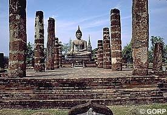

My own story from travelling in
ThailandClick Here
Content Page
Bangkok
After looking at historical evidence of the past four months both in India and Nepal we decided to take it easy and relax a while. Nothing amazed us any longer and we could not see the beauty in other wise beautiful places and buildings. When you have seen so much it's time to do something else. So we just wanted to relax, lay on the beach looking up into the clear blue sky through the coconut tree leaves, soak up the sun and swim in the sparkling lagoons. This was also part of traveling We figured Thailand was the place to do this as the Thai are known for their friendliness and hospitality to strangers. So we got on the plane and landed in Bangkok a few hours later.
Bangkok is the capital of Thailand and a very modern city. One reason why we went was that we had heard that Thailand was an easy country to travel in with efficient transport. We had had enough of sharing seats with chickens and hens and it would also be nice to travel without worrying if the car would break down or not. When we got our taxi the driver did not seem to have any speed limit but he seemed to navigate well in this huge metropolis with ten lanes of traffic in each direction in some places. All of a sudden a man stepped out into our lane in front of the taxi. The driver had no chance to avoid the collision and drove straight into him. The man bounced into our windscreen which broke with millions of pieces of glass raining over us. The driver slammed on the brakes and finally stopped, the man rolled of our bonnet and fell down in front of the car. The whole incident was over in matter of seconds. We were in shock, following the whole incident as it felt like it was shown in slow motion. We were sure he was dead. Like in a horror movie (except this time we wanted it to happen) the man stood up like nothing had happened and brushed off his cloths, he had some blood on his face but otherwise he looked fine, not at all like he had been driven over by a car. He just wanted to walk off but we insisted on taking him to the hospital which he finally agreed to. I think we were more shook up after the incident then he was.
After booking into some cheap accommodation in Cosan Road which is the back packing street in Bangkok we went out for a few beers to calm our nerves. We were all sitting at a table with a few other people talking and having a good time. Some one offered us a drink out of a bottle which we accepted. After this drink I felt a sudden dizziness coming over me. I told my friend I wasn't feeling well and went out to the bathroom. I felt that something was definitely wrong with me. I just didn't know what it was so I asked somebody to get my friends as I was just feeling worse by the minute. At this stage I was almost unconscious and they had to carry me out the back door into a waiting taxi. I can't remember anything from being in the bathroom until midday the day after. I can never say for sure but I'm almost certain someone put something into my drink. I was just lucky that I had my friends with me. It would have been very easy for anyone to take of my money belt that I always carried around my waist and take my travelers cheques and visa card. In Thailand anyone can cash in cheques and sign for your visa card.
After these two experiences in one day we wanted to get out of Bangkok. First we wanted to go to pick up our mail. There is a taxi service on the river in Thailand and this was the quickest way to GPO. The boat trip vas nice, the boat stopped in every little corner to let people off or on. We reached our destination and it was reassuring and calming to read that everything was like it always had been back home in Sweden. The world had not gone mad after all and this made me feel a bit better.
Phi Phi Islands
But we still decided to get some peace and quiet so we booked a ticket to go down south to a small Island called phi phi. The travel took a day or so by bus and boat. When we finally came there it was well worth the effort. There they were, the white sandy beaches perfect for long walks and for early jogging. There was the sparkling blue water made for swimming and snorkeling and the whole Island covered with coconut palms. There were not many tourist and even not that many locals. There was just a few restaurants, a pub made out of bamboo, where you could sit on the floor outside on the warm evenings. We spent many evenings here meeting other travelers like us, giving and receiving information about places to go to and not go to. We rented a small bungalow right by the beach. This was what we had been looking for so we stayed for three weeks . We ate the excellent Thai food and for dessert juicy water melon or bright yellow papaya picked on the island. Some days we were swimming and snorkeling with white sharks and lots of other colorful tropical fish and other living things. It was just like heaven. Just like anything else that you don't want to end this ended to soon.
Ko Samui
One of the reason for traveling in the first place was to meet people and see different places. This time we went to the second biggest Island in Thailand called Ko Samui and located south east of Bangkok. This Island was even ten years ago very exploited and full of western tourists. Some people where there to see the beautiful Thailand and this country is definitely beautiful. Others were too busy looking for some bought love of some young prostituted boy or girl to see the beauty of this country. It was sad to see how some tourist nurtured this trade of young poor boys and girls that had to be prostituted to maybe feed their whole family.
For us others, the party life was good and we met lots of people and had a lovely time celebrating both Christmas and the New year. After extending our stay a few times I steeped on a glass bottle walking home bare feet from the pub one evening. I had to be brought to the doctor as the blood was pouring out of my foot and wouldn't stop no matter how I tried to put on the bandage. I had to have ten stitches in the end. Because of the infection risk I had to take very strong antibiotics so I had to stay indoors for a week and I can tell you that the heat was not so pleasant when staying in a boiling bungalow with no air conditioning. After a week we took the bus up to Bangkok and booked our flight out of Thailand. The adventure was over for this time.
Previous Page Top of Page Content